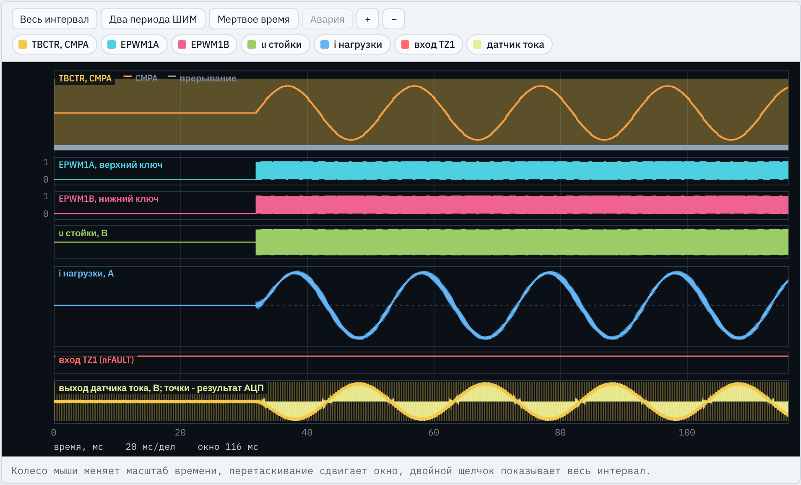
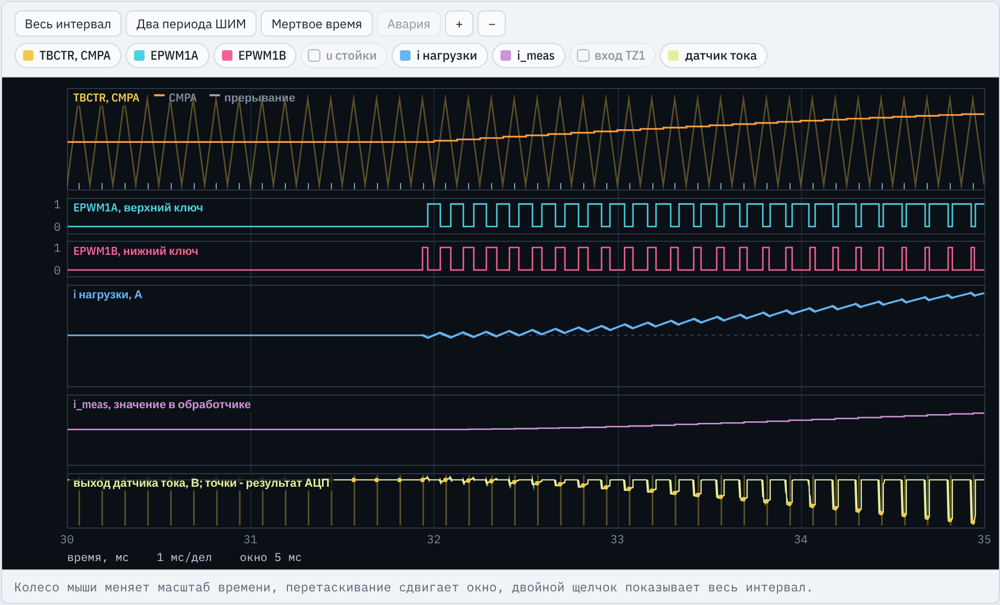
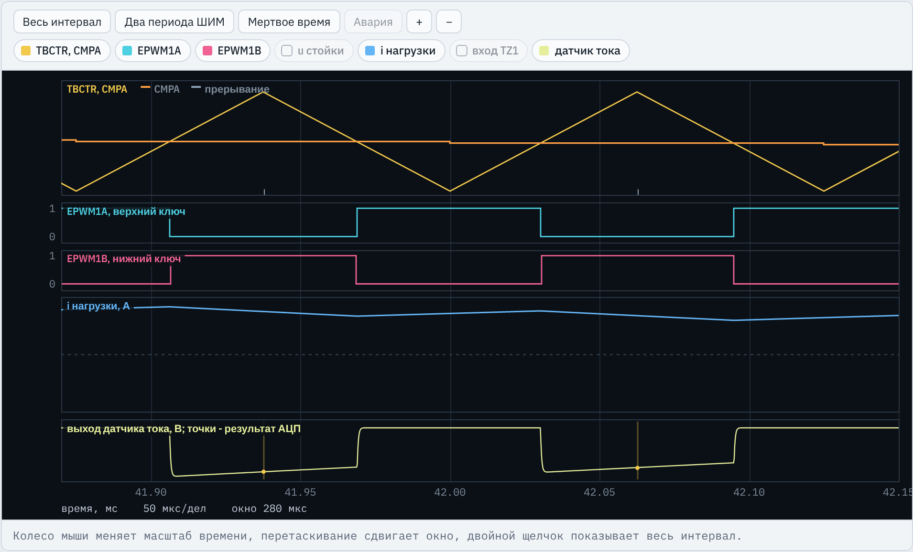
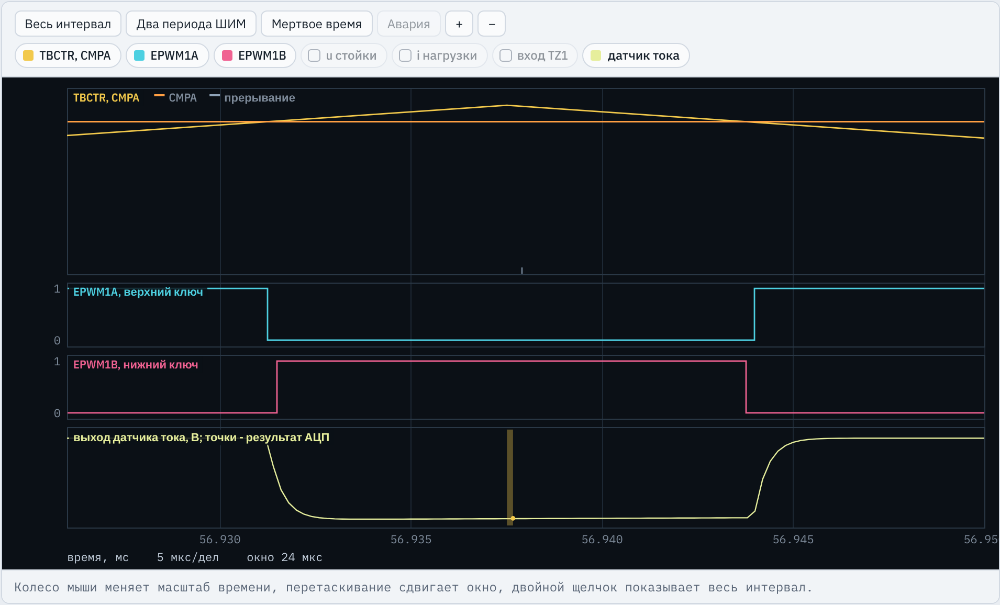
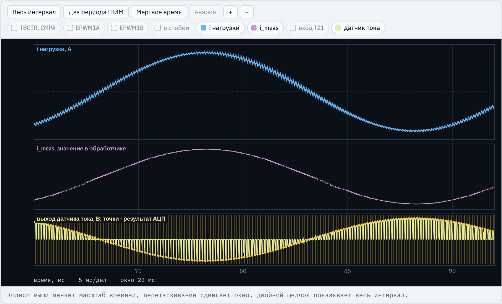
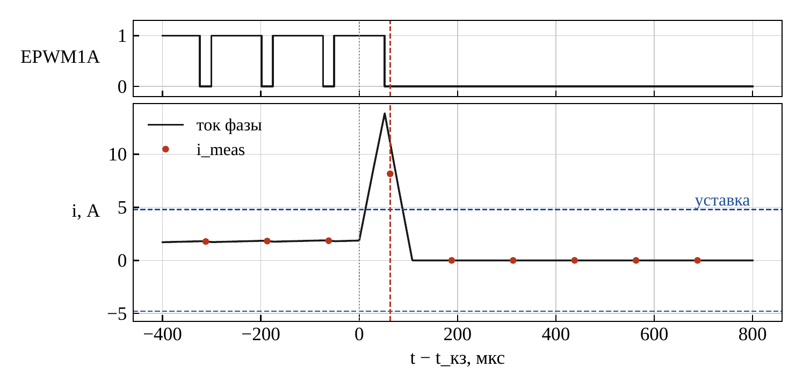
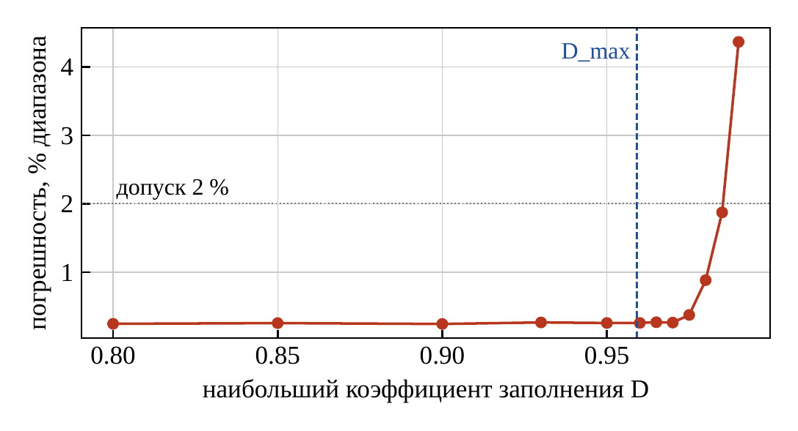

TMS320F2837xD · ЛАБОРАТОРНАЯ РАБОТА № 2
Датчик на шунте, АЦП с запуском от ePWM1, калибровка нуля, пересчет кода в ток и программная защита по току
Место в курсе
CMPAi_meas, программная защита по токуi_meas контур тока ДПТ, ЛР9 добавляет аппаратную защиту CMPSS#define FSW_HZ 8000.0f #define TBPRD_VAL 6250 #define DEADBAND_TCK 22 #define FAULT_GPIO 14
Настройка ePWM1, GPIO и входа TZ1 в заготовке уже есть. Новое — АЦП, его запуск и обработчик ADCA1.
Стенд C2000 · ЛР2. Измерение тока стойки инвертора
2 / 24
Инженерная задача
Контур тока и защита ключей используют одно значение — i_meas, обновляемое один раз за период ШИМ.
Rш = 5,0 мОм между нижним ключом и шиной 0d
G = 40, выход смещен на Uоп/2 = 1,65 В
вход ADCINA2, 12 бит, окно выборки 155 нс
флаг ADCINT1 по окончании преобразования
i_meas, защита, новое CMPA
Выход усилителя: uд = Uоп/2 + p·G·Rш·iш + ΔU0, где p = ±1 — полярность включения (в варианте 1 p = −1), ΔU0 — смещение нуля.
ΔU0 от 15 до 40 мВ неизвестного знака, разброс G до ±0,8 %; в каждом режиме испытаний свои
после включения ключа сигнал устанавливается за tуст = 2,4 мкс, на фронтах звон
шум, квантование АЦП, заряд конденсатора выборки за окно tS
Стенд C2000 · ЛР2. Измерение тока стойки инвертора
3 / 24
Момент выборки
Запуск при TBCTR = 0 дает нулевой ток при любом токе нагрузки.
Стенд C2000 · ЛР2. Измерение тока стойки инвертора
4 / 24
Задание 1
Вариант 1: Rш = 5,0 мОм, G = 40, p = −1, вход ADCINA2, tS min = 155 нс, tуст = 2,4 мкс, Imax = 4,8 А, fШИМ = 8 кГц.
| Величина | Формула | Вариант 1 |
|---|---|---|
ACQPS | ⌈tS min/TSYSCLK⌉ − 1, TSYSCLK = 5 нс | 155/5 − 1 = 30, окно tS = 155 нс |
| Диапазон Iд | ±Uоп/(2·G·Rш) | ±3,3/(2·40·0,005) = ±8,25 А |
| Цена единицы кода Δi | Uоп/(4096·G·Rш) | 4,03 мА |
| KАЦП | p·Uоп/(4096·G·Rш) | −4,028·10−3 А на единицу кода |
| Dmax | 1 − 2·(tуст + tS)·fШИМ | 0,959 |
| Допуски И6 и И7 | 0,5 % и 2 % от Iд | 41 мА и 0,165 А |
Стенд C2000 · ЛР2. Измерение тока стойки инвертора
5 / 24
Что делает студент
Дано: настройка ePWM1, GPIO и TZ1 из ЛР1, переменные, расчет duty и запись CMPA. Строки с пометкой ЗАДАНИЕ пишутся самостоятельно.
| № | Где | Что написать |
|---|---|---|
| 1 | определения ЛР2 | семь значений варианта, формулы K_ADC и D_MAX |
| 2 | InitAdcA() | режим АЦП, пауза после включения, SOC0 и ADCINT1 |
| 3 | InitEPwm1() | сигнал SOCA при TBCTR = TBPRD в каждом периоде, INTEN = 0 |
| 4 | main() | вектор ADCA1_INT, отключение выходов TZFRC.OST, разрешение прерывания |
| 5 | adca1_isr() | чтение результата, калибровка нуля, пересчет кода в ток |
| 6 | adca1_isr() | защита: |i| > Imax или насыщение АЦП |
| 7 | adca1_isr() | ограничение duty диапазоном от 0 до D_MAX |
| 8 | adca1_isr() | сброс флага ADCINT1 и подтверждение группы 1 PIE |
Результат: программа проходит И1–И11, сохранен протокол; в отчете — расчет, исследование и выводы.
Стенд C2000 · ЛР2. Измерение тока стойки инвертора
6 / 24
Структура программы
такт 200 МГц, выводы ePWM1, вход TZ1
режим АЦП, пауза 1 мс, SOC0
вектор ADCA1_INT
ШИМ ЛР1, SOCA; затем TZFRC.OST
счетчик пошел, SOCA каждый период
прерывание ADCA1 разрешено
Обработчик adca1_isr() — конечный автомат с тремя состояниями state:
выходы отключены, накопление 256 кодов, расчет offset_code, сброс OST
i_meas, проверка защиты, duty с ограничением, запись CMPA
выходы отключены TZFRC.OST; выход только перезапуском
Стенд C2000 · ЛР2. Измерение тока стойки инвертора
7 / 24
Задание 1
lr2_reference.c, определения ЛР2
#define ADC_CH 2 // вход АЦП A, к которому подключен датчик тока #define ACQPS_VAL 30 // окно выборки (ACQPS + 1) * 5 нс
Вход ADCINA2; ACQPS = 155/5 − 1 = 30, окно 155 нс (И3)
#define R_SHUNT 0.0050f // сопротивление шунта, Ом #define G_AMP 40.0f // коэффициент усиления усилителя #define CS_POL (-1.0f) // полярность: +1 - напряжение растет с током, -1 - убывает
Данные датчика: 5,0 мОм, G = 40, p = −1
#define T_SETTLE 2.4e-6f // время установления усилителя, с #define I_TRIP 4.8f // уставка защиты по току, А
tуст для Dmax, уставка Imax = 4,8 А
#define ADC_LSB_V (3.3f / 4096.0f)
#define K_ADC (CS_POL * ADC_LSB_V / (G_AMP * R_SHUNT)) // А на единицу кодаKАЦП = −4,028·10−3 А; знак полярности входит в коэффициент
#define T_SAMPLE ((ACQPS_VAL + 1) * 5.0e-9f) #define D_MAX (1.0f - 2.0f * (T_SETTLE + T_SAMPLE) * FSW_HZ)
Dmax = 0,959; формулы вычисляет компилятор
Стенд C2000 · ЛР2. Измерение тока стойки инвертора
8 / 24
Задание 2
lr2_reference.c, InitAdcA()
EALLOW;
AdcaRegs.ADCCTL2.bit.PRESCALE = 6; // ADCCLK = SYSCLK / 4 = 50 МГцПосле сброса PRESCALE = 0: ADCCLK = 200 МГц при допустимых 50 МГц (И4)
AdcSetMode(ADC_ADCA, ADC_RESOLUTION_12BIT, ADC_SIGNALMODE_SINGLE);
C2000Ware: 12 бит, однофазный вход, заводские поправки
AdcaRegs.ADCCTL1.bit.INTPULSEPOS = 1; // ADCINT1 по окончании преобразованияПри 0 флаг в конце выборки: обработчик читает результат прошлого периода
AdcaRegs.ADCCTL1.bit.ADCPWDNZ = 1; // включение АЦП EDIS; DELAY_US(1000); // не менее 500 мкс после включения
Первое преобразование — не ранее 500 мкс; иначе ошибка калибровки нуля
Стенд C2000 · ЛР2. Измерение тока стойки инвертора
9 / 24
Задания 2 и 3
lr2_reference.c, InitAdcA() и InitEPwm1()
EALLOW;
AdcaRegs.ADCSOC0CTL.bit.CHSEL = ADC_CH;
AdcaRegs.ADCSOC0CTL.bit.ACQPS = ACQPS_VAL;
AdcaRegs.ADCSOC0CTL.bit.TRIGSEL = 5; // запуск от ePWM1 SOCASOC0: вход ADCINA2, окно 155 нс, источник 5 — SOCA модуля ePWM1
AdcaRegs.ADCINTSEL1N2.bit.INT1SEL = 0; // ADCINT1 по окончании SOC0
AdcaRegs.ADCINTSEL1N2.bit.INT1E = 1;
AdcaRegs.ADCINTFLGCLR.bit.ADCINT1 = 1;
EDIS;Конец SOC0 формирует ADCINT1; флаг сброшен до пуска
EPwm1Regs.ETSEL.bit.SOCAEN = 1; EPwm1Regs.ETSEL.bit.SOCASEL = ET_CTR_PRD; EPwm1Regs.ETPS.bit.SOCAPRD = ET_1ST;
SOCA при TBCTR = TBPRD в каждом периоде (И2)
EPwm1Regs.ETSEL.bit.INTEN = 0; // прерывание ePWM не используетсяТакт — прерывание АЦП; обработчик ePWM не допускается (И5)
Стенд C2000 · ЛР2. Измерение тока стойки инвертора
10 / 24
Задание 4
lr2_reference.c, main()
EALLOW; PieVectTable.ADCA1_INT = &adca1_isr; EDIS;
Адрес обработчика в таблице векторов PIE (защищенная область)
InitEPwm1();
EALLOW;
EPwm1Regs.TZFRC.bit.OST = 1; // выходы отключены до окончания калибровки
EDIS;InitEPwm1() снимает OST; повторное отключение до пуска счетчика — ток шунта при калибровке равен нулю (И10)
EALLOW; CpuSysRegs.PCLKCR0.bit.TBCLKSYNC = 1; EDIS;
Дано: пуск счетчика ePWM1, с этого момента SOCA каждый период
IER |= M_INT1; // группа 1: ADCA1
PieCtrlRegs.PIEIER1.bit.INTx1 = 1;
EINT;ADCA1 — линия INTx1 группы 1 PIE; EINT снимает глобальный запрет
Стенд C2000 · ЛР2. Измерение тока стойки инвертора
11 / 24
Задание 5
lr2_reference.c, adca1_isr()
adc_code = AdcaResultRegs.ADCRESULT0;
Результат SOC0 уже готов: флаг сформирован по окончании преобразования
if (state == ST_CAL)
{
cal_sum += adc_code;
cal_cnt++;Выходы отключены, ток шунта равен нулю: код равен коду нуля плюс шум
if (cal_cnt >= CAL_N)
{
offset_code = cal_sum / CAL_N;
state = ST_RUN;Среднее 256 кодов: случайная ошибка нуля меньше в √256 = 16 раз
EALLOW;
EPwm1Regs.TZCLR.bit.OST = 1; // выходы включаются после калибровки
EPwm1Regs.TZCLR.bit.INT = 1;
EDIS;
}
}Сброс OST включает выходы; калибровка длится 256/8 кГц = 32 мс
Стенд C2000 · ЛР2. Измерение тока стойки инвертора
12 / 24
Задания 5 и 6
lr2_reference.c, adca1_isr()
else
{
i_meas = ((float)adc_code - offset_code) * K_ADC;i = KАЦП·(N − N0), N0 из калибровки
if (state == ST_RUN && (fabsf(i_meas) > I_TRIP || adc_code == 0 || adc_code == 4095))
Превышение 4,8 А или насыщение АЦП
{
EALLOW;
EPwm1Regs.TZFRC.bit.OST = 1; // программная защита по току
EDIS;
state = ST_FAULT;
}
}Выходы отключает модуль TZ; из ST_FAULT выхода нет до перезапуска. Срабатывание не позднее 2 периодов ШИМ (И9)
Стенд C2000 · ЛР2. Измерение тока стойки инвертора
13 / 24
Задания 7 и 8
lr2_reference.c, adca1_isr()
if (state == ST_RUN)
{
theta += TWO_PI * f_out * TS;
if (theta >= TWO_PI) theta -= TWO_PI;
duty = 0.5f + 0.5f * m_index * sinf(theta);Дано из ЛР1; задание вычисляется только в состоянии работы
if (duty > D_MAX) duty = D_MAX;
if (duty < 0.0f) duty = 0.0f;При m = 1,15 без ограничения D доходит до 1,075: выборка на установлении (И8)
EPwm1Regs.CMPA.bit.CMPA = (Uint16)(duty * TBPRD_VAL); }
Новое CMPA действует со следующего периода ШИМ
isr_count++; AdcaRegs.ADCINTFLGCLR.bit.ADCINT1 = 1; PieCtrlRegs.PIEACK.all = PIEACK_GROUP1;
Без сброса ADCINT1 обработчик выполнится один раз (ADCINTOVF); PIEACK — группа 1 (И5, И11)
Стенд C2000 · ЛР2. Измерение тока стойки инвертора
14 / 24
Осциллограф

TBCTR, CMPA — счетчик ePWM1 (заливка), CMPA (оранжевая), отметки прерывания внизу
EPWM1A, EPWM1B — верхний и нижний ключ; до 31,9 мс отключены
u стойки — напряжение средней точки, В
i нагрузки — ток фазы, А: 50 Гц, около 2,6 А
вход TZ1 — nFAULT, высокий уровень — аварии нет
датчик тока — выход усилителя, В; точки — результаты АЦП
Первые 32 мс — калибровка: ключи закрыты, CMPA = TBPRD/2 не меняется. Затем синусоидальная ШИМ.
Стенд C2000 · ЛР2. Измерение тока стойки инвертора
15 / 24
Осциллограф

TBCTR, CMPA — отметки прерывания в каждом периоде, в том числе при калибровке; CMPA меняется после 31,94 мс
EPWM1A, EPWM1B — выходы включаются после 256-го результата
i нагрузки — ток нарастает от нуля
i_meas — 0 при калибровке, затем повторяет ток
датчик тока — при калибровке — уровень нуля; затем провалы во время импульса нижнего ключа
Окно 30–35 мс. Канал i_meas выбран на вкладке «Переменные».
Стенд C2000 · ЛР2. Измерение тока стойки инвертора
16 / 24
Осциллограф

TBCTR, CMPA — вершина треугольника — TBCTR = TBPRD = 6250, момент SOCA; штрих внизу — вход в обработчик
EPWM1A — верхний ключ, открыт около TBCTR = 0
EPWM1B — нижний ключ, открыт около TBCTR = TBPRD
i нагрузки — ток положительный, пульсации ШИМ
датчик тока — при открытом VT1 — уровень нуля; при открытом VT2 ниже на G·Rш·i
Окно 41,87–42,15 мс, D около 0,5. Точка АЦП — в середине импульса EPWM1B.
Стенд C2000 · ЛР2. Измерение тока стойки инвертора
17 / 24
Осциллограф

TBCTR, CMPA — CMPA около 0,9·TBPRD, вершина счетчика в 56,9375 мс
EPWM1A, EPWM1B — импульс нижнего ключа 12,5 мкс между мертвыми временами
датчик тока — спад и установление около 2 мкс; темная полоса — окно выборки 155 нс
Окно 24 мкс. От фронта до выборки 6,25 мкс больше tуст + tS = 2,56 мкс. При D = Dmax = 0,959 запас исчезает.
Стенд C2000 · ЛР2. Измерение тока стойки инвертора
18 / 24
Осциллограф

i нагрузки — ток фазы в модели, А, с пульсациями ШИМ
i_meas — значение в обработчике, А; ступень на каждый период ШИМ
датчик тока — точки ниже уровня нуля при i > 0, выше при i < 0 (p = −1)
Окно 70–92 мс, один период 50 Гц. i_meas повторяет ток без пульсаций ШИМ: выборка в одной и той же фазе периода.
Стенд C2000 · ЛР2. Измерение тока стойки инвертора
19 / 24
Режим D испытаний

EPWM1A — верхний ключ; после срабатывания закрыт
ток фазы — нарастает со скоростью Ud/(2·Lк)
i_meas — точки — значения в обработчике раз в 125 мкс
уставка — Imax = 4,8 А
Рисунок методических указаний, вариант 1: при tкз нагрузка 0,05 Ом, 50 мкГн. Ток достигает 14 А. Вывод: от КЗ защищает аппаратный компаратор (ЛР9).
Стенд C2000 · ЛР2. Измерение тока стойки инвертора
20 / 24
Приемочные испытания
Режимы: A — номинальный, B — перемодуляция m = 1,15, D — КЗ нагрузки. Смещение и разброс датчика в каждом режиме свои.
| № | Что проверяется | Требование, вариант 1 |
|---|---|---|
| И1 | частота ШИМ (из ЛР1) | 8,000 кГц ± 0,1 % |
| И2 | выборка в середине импульса нижнего ключа | TBCTR = TBPRD ± 50 нс |
| И3 | нужный вход, конденсатор выборки успевает зарядиться | ADCINA2, окно ≥ 155 нс |
| И4 | допустимый режим АЦП, свежий результат | ADCCLK ≤ 50 МГц, 12 бит, пауза ≥ 500 мкс, INTPULSEPOS = 1 |
| И5 | такт — прерывание АЦП | 1 вызов за период, обработчика ePWM нет |
| И6 | калибровка нуля и знак KАЦП | средняя погрешность ≤ 41 мА (0,5 %) |
| И7 | точность в номинальном режиме | наибольшая погрешность ≤ 0,165 А (2 %) |
| И8 | точность при перемодуляции, ограничение Dmax | то же при m = 1,15 |
| И9 | быстродействие программной защиты | ≤ 2 периодов ШИМ = 250 мкс |
| И10 | выходы отключены при калибровке, нет ложных отключений | включены не позднее 1,25·Tк + 2 мс |
| И11 | правила программирования | EALLOW/EDIS, сброс ADCINT1, PIEACK, нет переполнения |
Стенд C2000 · ЛР2. Измерение тока стойки инвертора
21 / 24
Типовые ошибки
| Ошибка | Что происходит | Проверки |
|---|---|---|
запуск АЦП при TBCTR = 0 | выборка при открытом VT1, ток шунта 0 | И2, И6–И9 |
| нет калибровки нуля | ошибка смещения до 50 единиц кода | И6, И7 |
неверная полярность CS_POL | i_meas с обратным знаком | И6, И7, И8 |
ACQPS_VAL 14 из заготовки | окно 75 нс меньше 155 нс | И3 |
не задан PRESCALE | ADCCLK = 200 МГц | И4, И7, И8, И10 |
| нет паузы после включения АЦП | недостоверные первые результаты | И4, И6, И7, И8 |
INTPULSEPOS = 0 | результат прошлого периода | И4 |
| нет сброса ADCINT1 | обработчик выполняется один раз | И5–И11 |
нет ограничения D_MAX | выборка на установлении сигнала | И8 |
| нет защиты по току | выходы не отключаются при КЗ | И9 |
| выходы не отключены при калибровке | калибровка при токе в шунте | И10 |
Стенд C2000 · ЛР2. Измерение тока стойки инвертора
22 / 24
Исследование

погрешность — наибольшая, % диапазона; ограничение D снято
D_max — 0,959 по формуле
допуск 2 % — требование И7, И8
1. Убрать ограничение, Dпик = 0,5 + m/2 от 0,85 до 0,99: построить зависимость, отметить Dmax.
2. Заменить ET_CTR_PRD на ET_CTR_ZERO, объяснить результат.
3. Режим D: время срабатывания и пиковый ток, сравнить с оценкой.
Стенд C2000 · ЛР2. Измерение тока стойки инвертора
23 / 24
Порядок выполнения
FSW_HZ, TBPRD_VAL, DEADBAND_TCK, FAULT_GPIO из программы ЛР1Отчет: расчет параметров, текст программы с комментариями, протокол испытаний, результаты исследования, выводы в форме полученных результатов.
Стенд C2000 · ЛР2. Измерение тока стойки инвертора
24 / 24